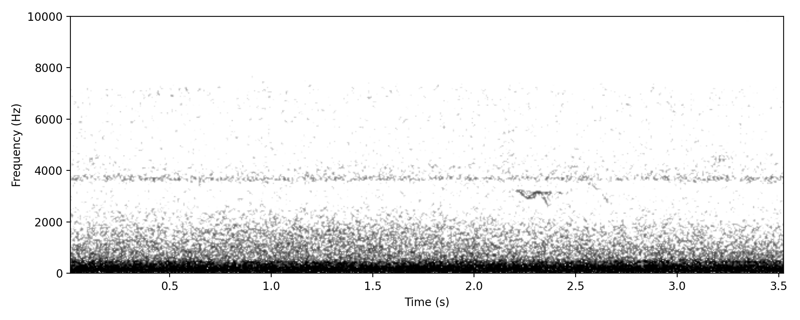
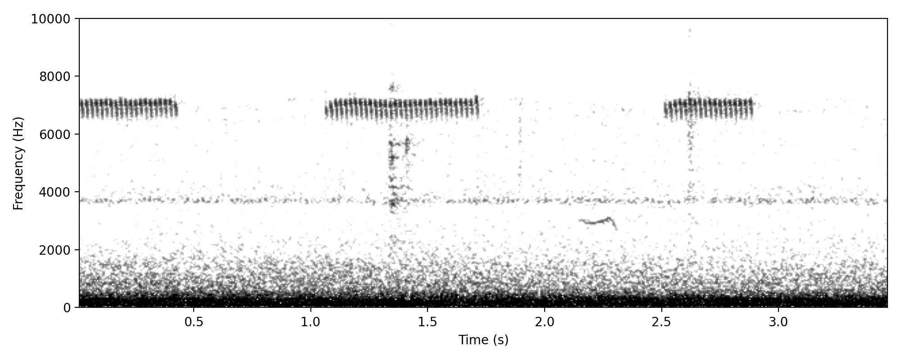
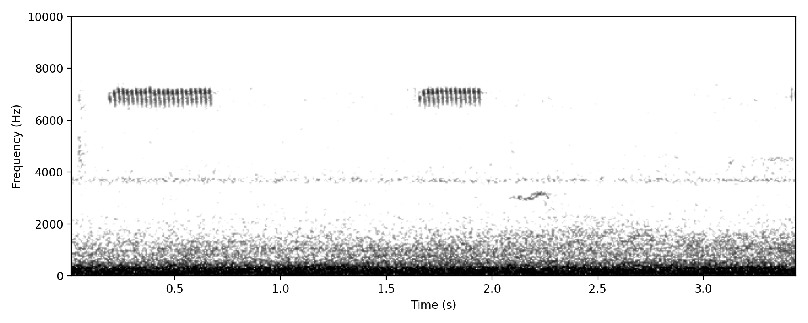

Looks and sounds like a single element from the much more common Brown Quail TWO-SHORT call. Currently assumed to be a single-element variant, although it is possible later that this will turn out to be something different.
Confidence statement
Medium confidence here - would appreciate any comments.
Project clips

Delaney Circuit (-27.52149, 153.11081), 09 Mar 2023, 02:33:14, Annotation 137, Annotator: Richard Fuller, Automated light denoise applied

Delaney Circuit (-27.52149, 153.11081), 09 Mar 2023, 02:33:21, Annotation 138, Annotator: Richard Fuller, Automated light denoise applied

Delaney Circuit (-27.52149, 153.11081), 09 Mar 2023, 02:33:24, Annotation 139, Annotator: Richard Fuller, Automated light denoise applied
Brown Quail TWO-SHORT Strongly supported
Putative nocturnal call type
This is not the classic TWO-NOTE WHISTLE described in HANZAB, which is a territorial call comprising a short note and then a long rising note; instead this call is two short whistles of roughly similar length. It is commonly given in the daytime and is well known. Still need to work out what name to give to this call. It is the only recognisable Brown Quail vocalisation so far heard in Aus NFC study.
Evidence for identification
Main elements at 3kHz match reference calls, occuring in two hump-shaped components, harmonic structure matches reference calls (including a lower harmonic at 1.5kHz), and duration is similar.
Confidence statement
Sounds very similar to several recordings from XC and Macaulay. Comparison image shows strong match (see comparison image)
Similar species / confusion risks
Not obvious what this could be other than Brown Quail.
Project clips
Clear example of the typical NFC of this species. Featured